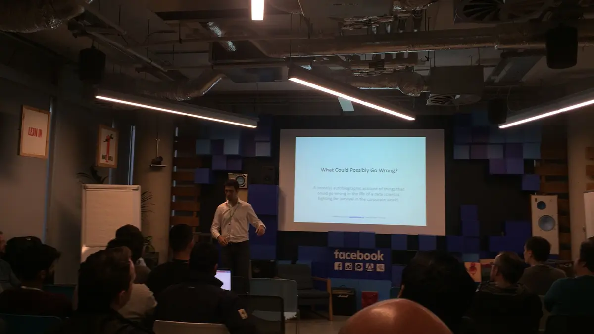

# A tibble: 5 × 8
Invoice StockCode Descript…¹ Quant…² InvoiceDate Price Custo…³ Country
<chr> <chr> <chr> <dbl> <dttm> <dbl> <chr> <chr>
1 489434 85048 "15CM CHR… 12 2009-12-01 07:45:00 6.95 13085 United…
2 489434 79323P "PINK CHE… 12 2009-12-01 07:45:00 6.75 13085 United…
3 489434 79323W "WHITE CH… 12 2009-12-01 07:45:00 6.75 13085 United…
4 489434 22041 "RECORD F… 48 2009-12-01 07:45:00 2.1 13085 United…
5 489434 21232 "STRAWBER… 24 2009-12-01 07:45:00 1.25 13085 United…
# … with abbreviated variable names ¹Description, ²Quantity, ³`Customer ID`BTYD Modelling with Stan
Mick Cooney mickcooney@gmail.com
Background
Before I Begin…
This talk is brought to you in association with
Bayesian Mixer
Dublin Data Science

Goals
- Teach Bayes
- Use realistic problem
- Learn BTYD
How hard can it be???
Customer Lifetime Value
UCI Machine Learning Repository
Online Retail II
https://archive-beta.ics.uci.edu/dataset/502/online+retail+ii
Transaction Data
# A tibble: 5 × 22
row_id invoice_id stock…¹ descr…² quant…³ invoice_…⁴ price custo…⁵ country
<chr> <chr> <chr> <chr> <dbl> <date> <dbl> <chr> <chr>
1 ROW0000001 489434 85048 "15CM … 12 2009-12-01 6.95 13085 United…
2 ROW0000002 489434 79323P "PINK … 12 2009-12-01 6.75 13085 United…
3 ROW0000003 489434 79323W "WHITE… 12 2009-12-01 6.75 13085 United…
4 ROW0000004 489434 22041 "RECOR… 48 2009-12-01 2.1 13085 United…
5 ROW0000005 489434 21232 "STRAW… 24 2009-12-01 1.25 13085 United…
# … with 13 more variables: stock_code_upr <chr>, cancellation <lgl>,
# invoice_dttm <dttm>, invoice_month <chr>, invoice_dow <chr>,
# invoice_dom <chr>, invoice_hour <chr>, invoice_minute <chr>,
# invoice_woy <chr>, invoice_ym <chr>, stock_value <dbl>,
# invoice_monthprop <dbl>, exclude <lgl>, and abbreviated variable names
# ¹stock_code, ²description, ³quantity, ⁴invoice_date, ⁵customer_id# A tibble: 5 × 4
tnx_timestamp customer_id invoice_id total_spend
<dttm> <chr> <chr> <dbl>
1 2009-12-01 07:45:00 13085 489434 505.
2 2009-12-01 07:45:59 13085 489435 146.
3 2009-12-01 09:05:59 13078 489436 630.
4 2009-12-01 09:08:00 15362 489437 311.
5 2009-12-01 09:23:59 18102 489438 2286.RFM Models
Recency
Frequency
Monetary
# A tibble: 5 × 9
customer_id date_most_recent recen…¹ trans…² amount recen…³ frequ…⁴ monet…⁵
<chr> <dttm> <dbl> <dbl> <dbl> <int> <int> <int>
1 12346 2010-06-28 13:53:00 186. 11 373. 2 5 2
2 12347 2010-12-07 14:56:59 24.4 2 1323. 5 2 4
3 12348 2010-12-16 19:08:59 15.2 2 913. 5 2 3
4 12349 2010-10-28 08:23:00 64.7 3 2671. 3 3 5
5 12351 2010-11-29 15:23:00 32.4 1 301. 4 1 2
# … with 1 more variable: rfm_score <dbl>, and abbreviated variable names
# ¹recency_days, ²transaction_count, ³recency_score, ⁴frequency_score,
# ⁵monetary_scoreNot much statistics…
Censored data
Survival analysis?
BTYD Models
Buy Till You Die
Counting Your Customers: Who Are They and What Will They Do Next?
(SMC Paper)
Peter Fader
Bruce Hardie
Statistical distributions of transactions
\[ \begin{eqnarray*} x &=& \text{count of transactions} \\ t_x &=& \text{time from birth to last transaction} \\ T &=& \text{time from birth to observation time} \end{eqnarray*} \]
\[ \text{Data: } (x, t_x, T) \]
P/NBD Models
\[ \begin{eqnarray*} x &\sim& \text{Poisson}(\lambda) \\ \tau &\sim& \text{Exponential}(\mu) \\ \\ \lambda &\sim& \text{Gamma}(\alpha, r) \\ \mu &\sim& \text{Gamma}(s, \beta) \\ \end{eqnarray*} \]
\[ \text{Parameters: } (\alpha, r, s, \beta) \]
BG/NBD Models
\[ \begin{eqnarray*} x &\sim& \text{Poisson}(\lambda) \\ P(\text{alive}, k) &\sim& \text{Geometric}(p, k) \\ \\ \lambda &\sim& \text{Gamma}(\alpha, r) \\ p &\sim& \text{Beta}(a, b) \\ \end{eqnarray*} \]
\[ \text{Parameters: } (\alpha, r, a, b) \]
But what about monetary?
G/G Spend Models
\[ \begin{eqnarray*} v &\sim& \text{Gamma}(p, \nu) \\ \\ p &\sim& \text{Gamma}(q, \gamma) \\ \end{eqnarray*} \]
\[ \text{Parameters: } (\nu, q, \gamma) \]
First Attempts
Pareto NBD Standard Model
Call:
pnbd(clv.data = customer_clvdata, start.params.model = c(r = 0.5,
alpha = 10, s = 1, beta = 20))
Coefficients:
r alpha s beta
0.84195 10.59826 0.05091 175.61767
KKT1: TRUE
KKT2: TRUE
Used Options:
Correlation: FALSE To Stan!!!
Stan Code
Likelihood Model
\[ \begin{eqnarray*} LL(\lambda, \mu \, | \, x, t_x, T) = x \log \lambda + \log \mu - \log(\lambda + \mu) \\ + \, \text{log_sum_exp}(A, \, B)\\ \\ A = -(\lambda + \mu) \, t_x \;\;\;\; B = \log \lambda - (\lambda + \mu) \, T \end{eqnarray*} \]
Checking sampler transitions treedepth.
Treedepth satisfactory for all transitions.
Checking sampler transitions for divergences.
No divergent transitions found.
Checking E-BFMI - sampler transitions HMC potential energy.
The E-BFMI, 0.01, is below the nominal threshold of 0.30 which suggests that HMC may have trouble exploring the target distribution.
If possible, try to reparameterize the model.
The following parameters had fewer than 0.001 effective draws per transition:
s, beta
Such low values indicate that the effective sample size estimators may be biased high and actual performance may be substantially lower than quoted.
The following parameters had split R-hat greater than 1.05:
s, beta
Such high values indicate incomplete mixing and biased estimation.
You should consider regularizating your model with additional prior information or a more effective parameterization.
Processing complete.

Well that doesn’t look awesome…
Simulation-Based Calibration
- Set values for parameters
- Use statistical model to generate data
- Fit model with model
- Compare fitted values to ‘real’ values
But before we get to that…
Gamma Distribution

Reparameterise
\[ \text{Gamma}(r, \alpha) \rightarrow \text{Gamma}(\mu, c_v) \]
\[ \begin{eqnarray*} \mu &=& \text{ Mean} \\ c_v &=& \text{ Coefficient of Variation} \end{eqnarray*} \]
\[ \begin{eqnarray*} r &=& \frac{1}{c_v^2} \\ \\ \alpha &=& \frac{1}{\mu \, c_v^2} \end{eqnarray*} \]

Use this parameterisation from now on
Models of Synthetic Data
Long Timeframe Data
Checking sampler transitions treedepth.
Treedepth satisfactory for all transitions.
Checking sampler transitions for divergences.
No divergent transitions found.
Checking E-BFMI - sampler transitions HMC potential energy.
E-BFMI satisfactory.
Effective sample size satisfactory.
Split R-hat values satisfactory all parameters.
Processing complete, no problems detected.
Fixed Priors
What if we ignore hierarchy?
Fix priors
Checking sampler transitions treedepth.
Treedepth satisfactory for all transitions.
Checking sampler transitions for divergences.
No divergent transitions found.
Checking E-BFMI - sampler transitions HMC potential energy.
E-BFMI satisfactory.
Effective sample size satisfactory.
Split R-hat values satisfactory all parameters.
Processing complete, no problems detected.


Hierarchical-Means Model
- Fix both \(c_v\) values
- Hierarchical priors for \(E(\lambda)\) and \(E(\mu)\).
model {
// model the hyper-prior
lambda_mn ~ lognormal(lambda_mn_p1, lambda_mn_p2);
mu_mn ~ lognormal(mu_mn_p1, mu_mn_p2);
// setting priors
lambda ~ gamma(r, alpha);
mu ~ gamma(s, beta);
target += calculate_pnbd_loglik(n, lambda, mu, x, t_x, T_cal);
}Checking sampler transitions treedepth.
Treedepth satisfactory for all transitions.
Checking sampler transitions for divergences.
No divergent transitions found.
Checking E-BFMI - sampler transitions HMC potential energy.
E-BFMI satisfactory.
Effective sample size satisfactory.
Split R-hat values satisfactory all parameters.
Processing complete, no problems detected.


Models on Real-World Data
Fixed Prior Model
Checking sampler transitions treedepth.
Treedepth satisfactory for all transitions.
Checking sampler transitions for divergences.
No divergent transitions found.
Checking E-BFMI - sampler transitions HMC potential energy.
E-BFMI satisfactory.
Effective sample size satisfactory.
Split R-hat values satisfactory all parameters.
Processing complete, no problems detected.
Cannot compare to ‘real’ values
- Count of customers transacting
- Count of all transactions
Hierarchical-Lambda Model
BG/NBD Model
No explicit lifetime model
Chance of lapsing, \(p\), after transaction
Conclusion
Lessons Learned
Workshop
Bad Idea
Better to use brms / rstanarm
Useful approach \(\rightarrow\) Problem worth solving
BTYD Models
Re-do Data Generation
Pay attention to seasonality
Add monetary modelling
Thank You!
This talk…
https://github.com/kaybenleroll/data_workshops/talk_bm_btydbayes_202211
Workshop…
https://github.com/kaybenleroll/data_workshops/ws_clvbayes_202201